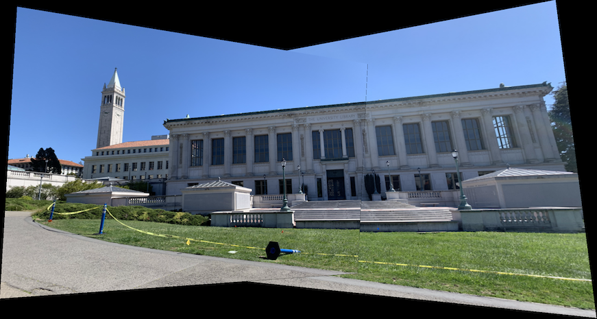

Project 5: [Auto]Stitching Photo Mosaics
By: Alex Yang
Part 1: Image Warping and Mosaicing
This section covers finding homographies, transforming images, and stitching together transformed images to create mosaics.
Recover Homographies
Homographies relate two images of the same planar surface. It is a transformation from one projective space to another, and so it can be written as p' = Hp where H is a 3x3 matrix and p and p' are the projective spaces.
In this part, we recover homographies between two sets of points. We establish p' = Hp for all corresponding points p' and p, and solve for the homography H. Specifically, we want to minimize the loss given by our homography:i
The above can be written as a series of linear equations. The 8x1 vector can be solved using least squares, and to fully recover the homography we add 1 to the end of the vector and reshape it into a 3x3 matrix.
The process of defining correspondence points was done manually by selecting matching locations between images.
Warp the Images
We can now warp images using the recovered homography. Because we are applying a perspective transform, the resulting image will have a different shape than the original. So, we first get the bounding box of the warped image by piping the corners of our original image through the homography. The warped corner points define a trapezoidal region which includes our warped image. We now use inverse mapping of the homography to map the points in the trapezoidal region to points in the original image. Each pixel is sampled using nearest neighbor sampling. The homography may map points to have negative values, so horizontal and vertical shifting are also needed to adjust for this.
Image Rectification
Image rectification is the process of applying a homography to an image usually for straightening, but it can also be more generally used to view images from a different perspective, resulting in some pretty cool effects.
The process of doing this is simple. First define some correspondence points on an image — four points usually work well. Next, define correpondence points on where the other correspondence points should map to. Find the homography that relate these two sets of points and warp the original image with the homography.
Here is an example I did to make my pencil pouch appear from a bird's-eye view. On the left is the original image taken from a slant, and on the right is the rectified image.

|

|
Another example — Wheeler Hall in Berkeley.

|
|
Making Mosaics
Let's see how we can use our homographies and warp function to create mosaics. I took two photos for each mosaic, rotating the camera along the z-axis in between photos so that I could capture a wider view. Overlapping features in the photos are necessary so that we can define correspondence points between the two images. Example is shown below:

|

|
Next, I labeled eight correspondence points between the two pictures. I then found the homography H between the points, warped the second image by H, and stitched the original and warped image together.
In order to stitch the images, I first created a blank canvas in which I could stack the images onto. The warped image goes on first, then the original image on top, shifting the images accordingly before stacking. This essentially completes the process, but leaves some edge artifacts around the overlapping region. I used weighted averaging (feathering) to minimize these artifacts.
I first tried linear blending, which involves using a linearly decreasing weight from 1 to 0 over the overlapping region. Specifically, the pixel value in the overlapping region is determined by rgb = alpha * im1 + (1 - alpha) * im2, where alpha is the weight of the original image's pixel values in the final image for a column in the overlapping region. The weight alpha decreases linearly from 1 to 0 over the columns in the overlapping region for linear blending. This worked well in getting rid of edge artifacts, but also created wedge-like artifacts at the crossing sections. So, instead of a linearly decreasing weight, I tried using a sigmoid function to determine the weight alpha. Now columns closer to the left and right edges of the overlapping region will be influenced even more by the left and right images, respectively. This helped reduce the effect of the wedge artifacts.
Here are the mosaics of Doe Library:
|

|
|
|

|
More examples:

|

|

|

|
|

|

|
|

|
What I learned
It was really cool learning how a simple homography can do so much. I think the best part was image rectification because the images really look like they were taken from another perspective even though I just multiplied the image by a homography matrix.